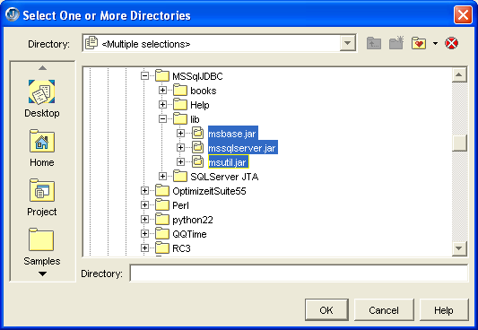
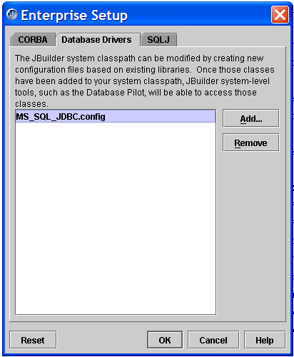
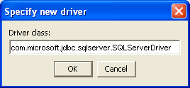
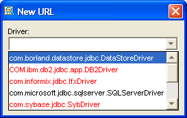
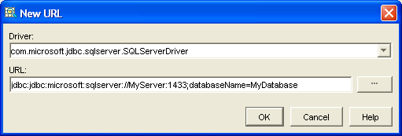

The article describes how to connect to MS SQL Server from JBuilder using pure JDBC drivers.
The first step is to download the JDBC drivers from Microsoft's site:
http://www.microsoft.com/sql/downloads/jdbcregister.asp
You will probably have best luck doing this if you have a .NET Passport:
http://www.passport.net/Consumer/
After downloading and installing the driver, the next step is to open JBuilder 9 Enterprise edition. Select Tools | Enterprise Setup and turn to the Database Drivers page. Press the add button. Create a new library that points at the three jar files in the lib directory from the Microsoft SQL Server JDBC install. After doing this, you will be prompted to restart JBuilder.
Figure 1: Selecting the three MS SQL JDBC jar files used by the JBuilder library.
The end result of his process is to create a file in the JBuilder/lib/ext directory. The file will have a .config extension. I called mine, MS_SQL_JDBC.config. The content of my file looks like this:
addpath C:/bin/Programming/Database/MSSQLJDBC/lib/msbase.jar addpath C:/bin/Programming/Database/MSSQLJDBC/lib/mssqlserver.jar addpath C:/bin/Programming/Database/MSSQLJDBC/lib/msutil.jar;
If you open up the JBuilder.config file, you will find that there is a reference to this directory that ensures that all these files are loaded by JBuilder.

Figure 2: The Enterprise Setup Dialog after setting up the Enterprise config file.
After JBuilder restarts, select Tools | Database Pilot. In the Database Pilot, choose View | Options from the menu, and turn to the Drivers page. Press the Add button and in the dialog shown in Figure 2 type in the following string:
com.microsoft.jdbc.sqlserver.SQLServerDriver
Figure 2: Setting up your driver in the Database Pilot.
You will also have a chance to type in a sample URL:
jdbc:microsoft:sqlserver://MyServer:1433;databaseName=MyDB
Now close the dialog and select File | New from the Database Pilot main menu. Drop down the list of drivers. You should see your new driver in a black font, as shown in Figure 3. Drivers that are not correctly configured appear in a red font.
Figure 3: The MS SQL Server driver should appear in a black font.
If your driver shows up in red, then you probably made a mistake in one of the steps covered so far in this document. In particular, the JBuilder library does not point at the right jar files, or else you type in the wrong class name in the dialog shown in Figure 2.
Select the Microsoft SQL Server driver. Type in a valid URL as shown in Figure 4. The URL should be based on the sample URL shown early in this document.
Figure 4: Type in a valid URL that specifies the name of your server and your database name.
Click the OK button and choose File | Apply from the Database Pilot main menu to save your work. Test your connection by choosing File | Open from the menu. You will be prompted for the user name and password for your database.